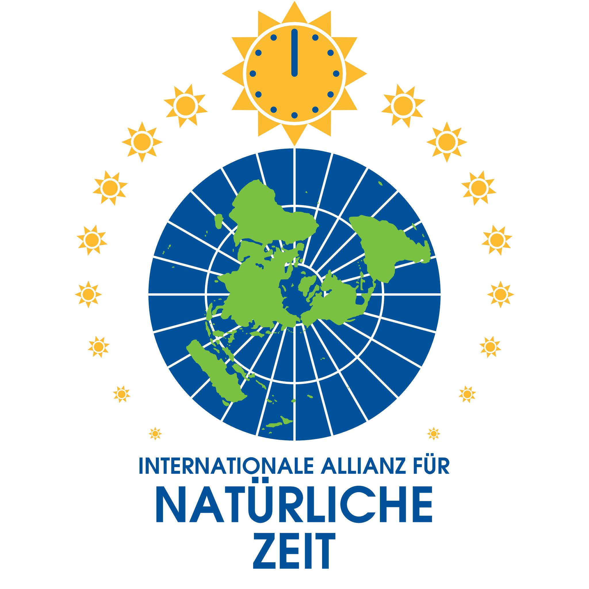

Wir plädieren für eine dauerhafte, weltweite Anwendung von natürlicher Uhrzeit, umgesetzt durch geographisch angemessene, sonnenbasierte Zeitzonen. Die Geschichte und eine wachsende Anzahl an wissenschaftlichen Belegen zeigen, daß dies von fundamentaler Bedeutung für Gesundheit, Sicherheit, Bildung, Arbeit, Wirtschaft, Umwelt und die Menschenrechte ist.
Unterzeichnen Sie Unsere Petition an die Europäischen Staats- und Regierungschefs!Über Uns
Wir sind eine internationale Koalition aus Gesundheitsaktivisten, Zeitnutzungsaktivisten und NGOs, die von Chronobiologen, Neurowissenschaftlern und Ökonomen unterstützt wird und daran arbeitet, das öffentliche und politische Bewusstsein für die Notwendigkeit einer dauerhaften Wiederherstellung der natürlichen Zeitzonen zu schärfen, die für jeden Staat geografisch angemessen sind.
+
Wir möchten Bürgern und Gesetzgebern umfassende und zuverlässige Informationen zur Verfügung stellen, die für die Einstellung ziviler Uhren relevant und unerlässlich sind. Wir fordern die Europäische Union, ihre Mitgliedsstaaten, die Bundes-, Landes- und Provinzregierungen der Vereinigten Staaten und Kanadas auf, und die Regierungen aller Nationen die verfügbaren wissenschaftlichen Belege der weltweit führenden Forscher in der Chronobiologie und den Umweltwissenschaften anzuerkennen und sich so schnell wie möglich auf die Wiederherstellung oder Inkraftsetzung natürlicher, geographisch angemessener Zeitzonen zu verständigen.
Jedem Land seine eigene natürliche Zeit!
Warum Natürliche Zeit?
Ein Leben gegen unsere innere Uhr – auch circadiane Uhr genannt – führt zu akuten wie auch chronischen Schäden unserer Gesundheit. Hierfür existiert weltweit eine überwältigende und stetig wachsende Anzahl an wissenschaftlichen Belegen und Untersuchungen.
+
Geht unsere innere Uhr nicht im Gleichtakt mit der sozialen Uhrzeit, erhöht sich signifikant das Auftreten von Schlafmangel, Schlafstörungen, Depressionen, Stoffwechselstörungen, Fettleibigkeit, Erkrankungen des Herz-Kreislauf-Systems und Krebs. Unsere Lebenserwartung sinkt. Es führt zu verringerter Leistungsfähigkeit und damit zu einem vermehrten Auftreten von Unfällen und Beeinträchtigungen des Straßenverkehrs. Auch erhöht sich der Treibstoff- und Energieverbrauch durch den zeitlich verfrühten Tagesbeginn. Unsere Leistungsfähigkeit bei der Arbeit, in der Schule oder im Studium leidet. Insgesamt führt eine Fehlstellung zwischen innerer Uhr und sozialer Uhrzeit zu einer unnötigen Belastung des Gesundheitssystems, der Wirtschaft und der Umwelt.
Die Fehlstellung der sozialen Uhrzeit zu unserer inneren Uhr wird der Gesellschaft durch die saisonale Uhrenumstellung im Frühling und im Herbst aufgezwungen. Hierbei wird die soziale Uhrzeit im Frühjahr auf eine Zeitzone eingestellt, die nicht der geographischen Lage des Landes entspricht. Durch dauerhaftes Einstellen der sozialen Uhrzeit auf Zeitzonen, die nicht der geographischen Lage des Landes entsprechen, entsteht somit eine chronische Fehlstellung mit den oben genannten Folgen. Eine dauerhafte Beibehaltung einer Zeitzone, die möglichst nahe an der Sonnenzeit ist und damit nahe an den natürlichen Rhythmen, würde auf einfachem Wege die Probleme lösen, welche sich einer chronischen Fehlstellung ergeben.
Es ist ein Menschenrecht unter Bedingungen zu leben, die ein Höchstmaß an geistiger und körperlicher Gesundheit ermöglichen. Eine ganzjährige geographisch korrekte und damit natürliche Zeitzone verbessert Schlafqualität und Schlafdauer. Sie kommt der geistigen und körperlichen Gesundheit zu Gute, verlängert die Lebensdauer und begünstigt die Entwicklung von Kindern und Jugendlichen. Sie erhöht die Sicherheit auf Straßen und beim Umgang mit Arbeitsmaschinen, sie verbessert die Leistungsfähigkeit in der Schule und bei der Arbeit. In weitflächigen Ländern, die sich über mehrere Zeitzonen erstrecken, hat sie einen positiven Einfluß auf den Binnenmarkt. Kosten und Umweltverschmutzung werden reduziert und der Klimawandel verlangsamt. Dauerhafte natürliche Zeitzonen bieten zu jeder Jahreszeit eine ausgewogene und gesunde Ausnutzung von Tageslicht. Sie sind ein wesentlicher Aspekt einer gerechten und nachhaltigen Gesellschaft.
Wissenschaftliche Stellungnahmen
Lesen Sie Stellungnahmen Chronobiologischer Gesellschaften
Lesen Sie Stellungnahmen von Schlafgesellschaften
+
- American Academy of Sleep Medicine (AASM)
- American National Sleep Foundation (NSF)
- American Sleep Research Society (SRS)
- British Sleep Society (BSS)
- Canadian Sleep Research Consortium
- Canadian Sleep Society (CSS)
- Dutch Association of Sleep–Wake Research (NSWO) & Netherlands Sleep Science Association (SVNL)
- European Sleep Research Society (ESRS)
- German Society for Sleep Research & Sleep Medicine (DGSM)
- Hungarian Sleep Association (MAS)
- Portuguese Sleep Association (APS)
- Spanish Sleep Society (SES)
Lesen Sie Stellungnahmen Anderer Organisationen
Mitglieder
+
Australien 🇦🇺

Belgien 🇧🇪

Dänemark 🇩🇰

Deutschland 🇩🇪

Deutschland 🇩🇪

Frankreich 🇫🇷

Kasachstan 🇰🇿

Niederlande 🇳🇱

Niederlande 🇳🇱

Norwegen 🇳🇴

Russland 🇷🇺

Russland 🇷🇺

Schweden 🇸🇪

Spanien 🇪🇸

Vereinigte Staaten 🇺🇸 & Canada 🇨🇦

Vereinigtes Königreich 🇬🇧

Unterstützer
+
Belgien 🇧🇪

Canada 🇨🇦

Deutschland 🇩🇪

Deutschland 🇩🇪

Deutschland 🇩🇪

Deutschland 🇩🇪

Deutschland 🇩🇪 & Portugal 🇵🇹

International 🌐

Niederlande 🇳🇱

Spanien 🇪🇸

Ungarn 🇭🇺

Vereinigte Staaten 🇺🇸

Schließen Sie Sich der Bewegung für Gesunde, Faire, und Natürliche Zeiten An!
+
Besuchen Sie unsere Mitgliedsgruppen und unterstützen Sie deren Tätigkeit. Schreiben Sie den nationalen Kontakten Ihres Landes, siehe weiter unten, wenn Sie sich gern stärker engagieren möchten. Senden Sie eine E-Mail an unsere Allianz, wenn Ihre Organisation Mitglied werden möchte. Beides ist kostenlos.
Weltkarte
+
Nationale Kontakte
+


Russland 🇷🇺